Sigmah
Logiciel libre de gestion des projets humanitaires
Manuel de l’utilisateur
Version 1
(publiée le 14 juin 2011)
TABLE DES MATIERES
Introduction
1 Présentation générale
1.1 Le projet Sigmah
1.1.1 Historique du projet Sigmah
1.1.2 L’avenir du projet Sigmah
1.2 Le logiciel Sigmah
1.2.1 Qu’est-ce que le logiciel Sigmah ?
1.2.2 A qui s’adresse le logiciel Sigmah ?
2 Prise en main du logiciel Sigmah
2.1 Navigation dans l’application
2.1.1 Défilement des onglets 5
2.1.2 Croix des onglets pour fermer les fenêtres
2.1.3 Chevrons encadrés : réduire/étendre
2.1.4 Flèches encadrées : plier/déplier
2.1.5 Personnalisation des tableaux
2.1.6 Chevrons non-encadrés : autres boutons
2.2 Présentation des principales icônes
2.3 Les codes couleurs
3 Définitions
3.1 Le « Modèle »
3.2 Le « Projet »
3.2.1 Projet propre
3.2.2 Projet de financement
3.2.3 Projet partenaire local
3.3 La « Zone d’intervention » (ie : Mission, Base, Desk, etc.)
3.4 Le « Rapport »
3.5 Un « Document »
3.6 Un « Indicateur »
3.7 Une « Catégorie »
3.8 L’« Amendement »
4 Ecrans utilisateur
4.1 Tableau de bord
4.1.1 Liste des rappels
4.1.2 Tableau des zones d’intervention
4.1.3 Tableau des projets
4.2 Zone d’intervention
4.2.2 Panorama
4.2.3 Informations
4.2.4 Agenda
4.2.5 Rapports & documents
4.3 Projet
4.3.1 Tableau de gestion
4.3.1.1 Le tableau des rappels
4.3.1.2 Le tableau des phases
4.3.1.3 Le tableau des projets liés
4.3.2 Détails
4.3.3 Cadre logique
4.3.4 Gestion indicateurs
4.3.5 Saisie indicateurs
4.3.6 Agenda
4.3.7 Rapports & documents
4.3.7.1 Rédiger un rapport
4.3.7.2 Joindre un document
5 Comment faire pour… ?
5.1 Comment créer un projet ?
5.1.1 Comment créer un projet dans le Tableau de bord ?
5.1.2 Comment créer un projet dans une page Projet ?
5.2 Comment changer de phase ?
5.3 Comment faire un amendement de projet ?
5.3.1 Verrouillage – Déverrouillage de version
5.3.2 Validation ou rejet de version
5.3.3 Création d’une nouvelle version
5.4 Comment copier-coller un cadre logique ?
5.5 Comment attacher un document ?
5.6 Comment attacher une nouvelle version d’un document ?
5.7 Comment créer un « indicateur » ?
5.8 Comment créer un site de collecte d’indicateur ?
5.9 Comment faire… si j’ai un problème ??
6 Administration
6.1 Concepts pour l’administrateur
6.1.1 « Utilisateur », « profil » et « groupe de confidentialité »
6.1.2 Champ d’un modèle de projet
6.1.2.1 Définitions des types associés à un champ de modèle
6.2 Gestion des utilisateurs et droits
6.2.1 Comment ajouter un utilisateur ?
6.2.2 Comment désactiver (et/ou réactiver) un compte d’utilisateur ?
6.2.3 Comment rechercher un utilisateur ?
6.2.4 Comment modifier un compte d’utilisateur
6.2.5 Comment ajouter un profil ?
6.2.6 Comment modifier un profil ?
6.2.7 Comment créer un groupe de confidentialité ?
6.2.8 Comment modifier un groupe de confidentialité ?
6.3 Gestion des zones d’intervention
6.4 Gestion des modèles de projet
6.4.1 Comment créer un modèle de projet ?
6.4.2 Comment éditer un modèle de projet qui vient d’être créé?
6.4.2.1 Partie supérieure :
6.4.2.2 Partie supérieure :
6.4.2.2.1 L'onglet "Champs"
6.4.2.2.2 L'onglet "Phases"
6.4.2.2.3 L'onglet "Cadre logique"
6.5 Gestion des modèles de zone d’intervention
6.5.1 Comment créer un modèle de zone d’intervention ?
6.6 Gestion des modèles de rapports
6.6.1 Comment créer un nouveau modèle de rapport ?
6.6.2 Comment créer une nouvelle section de rapport ?
6.7 Gestion des catégories
L’objectif de ce manuel est de présenter les principales
fonctionnalités du logiciel libre Sigmah afin d’en faciliter la prise en
main et/ou d’en optimiser l’utilisation. Sa rédaction a en effet été
pensée pour deux types de lecteurs :
- pour les personnes qui ont déjà
suivi une formation au logiciel et souhaitent se « rafraîchir » la
mémoire
- pour les autres à qui ce document peut servir de guide d’auto-apprentissage.
Ce manuel est à la fois disponible sous format papier (fichier .pdf), dans le logiciel sous forme d’aide contextuelle, et sur le site web www.sigmah.org sous forme de wiki. A ce propos, si vous décelez une erreur ou un manque, vous êtes invité à vous rendre sur le site sigmah.org pour faire les corrections nécessaires dans les pages wiki du manuel et contribuer ainsi à la démarche collaborative qui a motivé tout le développement du logiciel.
Le projet Sigmah a pour objectif de contribuer à l’amélioration de la
qualité du service rendu aux populations en situation de détresse par le
renforcement la capacité de gestion de projets des organisations de
solidarité internationale (ONG).
Pour cela, le projet Sigmah propose de mettre à disposition des acteurs
humanitaires un logiciel de gestion de projets répondant aux besoins de
centralisation de l’information et d’anticipation du travail collectif.
Ce projet est le fruit de la mise en commun de nombreuses forces :
• Le projet a été initié suite à une demande
collective d’un groupe d’ONG françaises. Courant 2009, un diagnostic des
besoins en termes de gestion de l’information a été conduit auprès
d’elles : il a permis de mettre en évidence le besoin commun d’améliorer
ces fonctionnalités prioritaires.
• Le logiciel ActivityInfo, système de suivi
d’indicateurs développé pour l’UNICEF et ses ONG partenaires au Congo
est intégré au projet et bedatadriven (www.betadriven.com), concepteur du logiciel libre, est impliqué dans ce développement.
• Enfin, le système est conçu comme une suite au
COMPAS Dynamique, logiciel libre de gestion de la qualité des projets
humanitaires, développé par le Groupe URD (www.urd.org), auteur par ailleurs du diagnostic initial des besoins.
Le projet est piloté par un groupe d’organisations humanitaires constitué en « Coopérative de Pilotage ».
Pour plus d’informations sur l’historique du projet, consultez : www.sigmah.org
Selon vos capacités et disponibilités, vous pouvez nous donner votre avis sur le logiciel, suivre son évolution, participer à sa traduction, enrichir et corriger ce manuel, nous soutenir financièrement, voire rejoindre le groupe des développeurs ! Pour plus d’informations, voir www.sigmah.org.
Sigmah est un logiciel libre de gestion des informations opérationnelles des organisations d’aide internationale.
Le logiciel Sigmah a pour objectif d’améliorer la gestion de
l’information des projets humanitaires en répondant sous la forme d’un
seul outil informatique aux besoins suivants :
• Suivre l’état d’avancement des projets et des financements ;
• Créer, partager, analyser et cartographier des bases d’indicateurs pour le suivi et le diagnostic ;
• Centraliser les documents de projets;
• Améliorer la gestion de calendriers et l’anticipation avec alerte ;
• Opérationnaliser une démarche d’assurance qualité,
en définissant des critères et des points critiques liés aux projets.
Sigmah est un logiciel flexible et paramétrable, c’est-à-dire adaptable à chaque organisation en fonction de ses besoins et contraintes. Il n’existe donc pas une version type du logiciel mais une multiplicité de formats possibles. Le paramétrage est à la charge des administrateurs de Sigmah (profil particulier d’accès au logiciel).
Sigmah est un logiciel développé sous licence libre proposant une solution partageable et évolutive au bénéfice de l’ensemble de la communauté humanitaire.
N. B. : Nous recommandons aux organisations l’utilisation du logiciel Sigmah dans le cadre d’un processus global d’adoption institutionnelle. Pour plus d’informations sur cette démarche d’adoption, consultez le site du logiciel (www.sigmah.org).
Le logiciel Sigmah est principalement destiné aux organisations d’aide
internationale mettant en œuvre des projets humanitaires complexes
(diverses équipes en charge de plusieurs projets/programmes dans des
secteurs techniques variés et dans différentes zones d’intervention).
Un utilisateur individuel peut toutefois utiliser le logiciel Sigmah
avec profit pour un projet personnel, y compris de taille modeste, mais
n’utiliserait pas dans ce cas tout le potentiel du logiciel.
N.B. : Dans tous les cas, le logiciel Sigmah requiert de solides
connaissances en matière de gestion du cycle de projet et, pour être
exploité de façon optimale, des notions de base concernant les principes
de l’assurance qualité (méthode COMPAS Qualité ou autre
référentiel qualité).
Enfin, l’utilisation du logiciel Sigmah ne remplace pas l’expertise des
personnes impliquées dans les projets/programmes. Elle ne dispense pas
non plus de l’utilisation d’outils techniques spécifiques à chaque
secteur d’intervention (sécurité alimentaire, eau et assainissement,
etc.) et à chaque type de poste (comptabilité, sécurité, intranet,
e-mails…)
Pour un meilleur confort d'utilisation, il est conseillé d'utiliser l'application en mode "Plein écran" : sous Mozilla Firefox, le mode "Plein écran" s'active et se désactive avec la touche F11.
Plusieurs pages peuvent être ouvertes simultanément dans une même fenêtre de navigateur Internet grâce à un système d’onglets. Ceux-ci sont situés juste en-dessous du logo et du nom de l’organisation : ils s’ajoutent à droite de l’onglet initial du Tableau de bord et ne peuvent être permutés. Leur ordre de présentation est donc fonction de l’ordre d’ouverture des pages.

Au cas où un très grand nombre de pages serait ouvert, les onglets se
déplaceront automatiquement vers la gauche, masquant par conséquent les
premiers onglets ouverts. Il est également possible de faire défiler
manuellement les onglets en cliquant sur l’un des deux triangles à
l’extrémité droite de leur ligne :
- Triangle tourné vers la droite pour un défilement des onglets vers la droite :

- Triangle tourné vers la gauche pour un défilement des onglets vers la gauche :

A l’exception du tableau de bord, chaque nouvelle page ouverte dans le logiciel possède un onglet doté d’une croix sur laquelle il est possible de cliquer pour fermer la fenêtre correspondante.
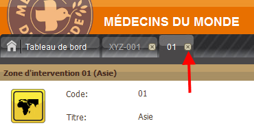
Cela signifie que le seul moyen de fermer le « Tableau de bord »
consiste à clôturer la session en cliquant en haut à droite de l’écran
sur le mot « Déconnexion ».

Le double chevron situé en haut à droite de la barre de titre de
certains blocs d’une page (exemples : Rappels, Projets liés, Filtrer,
Dimensions) sert à réduire et/ou étendre leur contenu afin de laisser
plus ou moins de place aux autres blocs de la page.
Ces doubles chevrons sont de quatre types et autant de fonctions :


Dans le bloc « Détails de la phase » d’une phase du sous-onglet “Tableau de gestion” d’un projet, le contenu est organisé au moyen de groupes. Ces groupes utilisent un système de volets qui permet de plier/déplier chaque groupe afin de le masquer. Pour cela, cliquez sur la flèche encadrée tournée vers le haut. Suite à cette action, le groupe correspondant au titre est plié, et apparaît masqué :

Pour déplier le groupe masqué, cliquez à nouveau sur le triangle encadré qui est cette fois tourné vers le bas :

Tous les tableaux utilisés dans le logiciel Sigmah offrent la même possibilité d’être réorganisés en matière d’intitulés de colonnes. Pour cela, survolez à l’aide de votre curseur l’extrémité droite de chaque intitulé de colonne. Vous verrez alors apparaître un triangle vers le bas sur lequel il est possible de cliquer. S’ouvre alors une liste déroulante composée de trois éléments :

N. B. : A l’ouverture des pages, le tri est croissant par défaut.
Fonctionnement de « Tri croissant » et « Tri décroissant »
« Tri croissant » et « Tri décroissant » fonctionnent pour les lettres mais aussi pour les numéros (0 à l’infini).

Fonctionnement de « Colonnes »
En survolant à l’aide de votre curseur l’intitulé Colonnes, vous
verrez apparaître une nouvelle liste déroulante avec case cochée ou à
cocher. Il s’agit des intitulés des colonnes disponibles pour le tableau
utilisé :
- un intitulé précédé d’une case cochée signifie que la colonne est affichée,
- un intitulé précédé d’une case non cochée signifie que la colonne est masquée.

Vous pouvez cocher ou décocher un intitulé par un simple clic sur la case correspondante :

Il est également possible d’augmenter ou réduire la largeur des colonnes en survolant l’extrémité droite de chaque colonne. Apparaissent alors deux flèches (l’une tournée vers la gauche, l’autre vers la droite) séparées par un double trait vertical. En maintenant appuyé votre clic, il vous est possible d’étirer ou diminuer la largeur de la colonne sélectionnée.
Si votre écran d’ordinateur est de petite taille ou si vous réduisez l’écran réservé à Sigmah (via un clic sur  de votre navigateur Internet par exemple), il se peut que vous manquiez
de place pour afficher tous les boutons d’une barre d’outils. Dans ce
cas, un double chevron
de votre navigateur Internet par exemple), il se peut que vous manquiez
de place pour afficher tous les boutons d’une barre d’outils. Dans ce
cas, un double chevron  apparaît au bout à droite de cette barre pour vous permettre de
continuer à accéder à tous les boutons qui ne peuvent plus être affichés
normalement.
apparaît au bout à droite de cette barre pour vous permettre de
continuer à accéder à tous les boutons qui ne peuvent plus être affichés
normalement.

En cliquant dessus, vous voyez apparaître les boutons qui ont disparu à l’écran en raison du manque de place. Ainsi, dans l’exemple précédent :

En lieu et place de :

 Zone d’intervention
Zone d’intervention
 Projet propre
Projet propre
 Projet de financement
Projet de financement
 Projet partenaire local
Projet partenaire local
N. B. : Pour plus d’informations sur ce que le logiciel Sigmah définit comme « Type de projet », voir « Le "Projet" ».
Pour plus d’informations sur ce que le logiciel Sigmah définit comme « Zone d'intervention », voir « La "Zone d'intervention" ».
Code couleurs du suivi de projet
Il permet de classer, distinguer et visualiser de façon rapide
l’avancement des activités d’un projet, mais aussi le montant dépensé et
le temps écoulé.
La couleur marron indique que la notion correspondante est en cours d’exécution sans dysfonctionnement particulier.
La couleur orange indique que la notion correspondante est en cours d’exécution et approche de son terme sans dysfonctionnement particulier.
La couleur rouge indique
que la notion correspondante est en cours d’exécution et proche de son
terme avec un risque potentiel associé (variable selon la notion mais en
général signifiant que le réalisé pourrait dépasser ou a dépassé le
prévisionnel).
Code couleurs des rappels
Un code couleurs existe aussi pour les rappels d’activités situés à
gauche du Tableau de bord et des Tableaux de gestion de Projets. Les
couleurs, associées à une même icône de rappel, correspondent donc à
trois informations différentes comme indiqué ci-dessous :
A faire :
 Fait
Fait A faire
A faire En retard
En retardEn attente :
 Accompli
Accompli En attente
En attente En retard
En retardPour être flexible, Sigmah s’appuie sur le concept de Modèle pour les concepts suivants :
1. Projet
2. Zone d’intervention
3. Rapport
N. B. : Tout projet créé est associé à une zone d’intervention comme indiqué dans le schéma ci-dessus :

Concrètement, un modèle de projet permet de créer autant de nouveaux projets qu’on veut qui demanderont tous les mêmes informations, auront le même format de cadre logique, le même nombre de phases, etc.
Dans Sigmah, un projet est une entité rassemblant a minima :
En fonction des spécificités de son modèle, le projet peut contenir
bien d’autres informations : toutes celles que l’organisation juge utile
de suivre.
Dans la pratique, les acteurs humanitaires parlent de projet sans
faire une nette différence entre leur propre perception du projet, celle
qu’en a le bailleur et celle que peut aussi en avoir un partenaire de
mise en œuvre. Afin de gagner en précision, notamment dans le cas de cas
de cofinancements, la création de concepts distincts de projet s’est
révélée nécessaire.
Le logiciel Sigmah propose ainsi trois types de projets :
Ces trois types de projet, au-delà de leurs différences, répondent à la même définition de la notion de projet décrite ci-dessus.
Le « projet propre » correspond a maxima à un projet relevant
uniquement des procédures de l’organisation qui est responsable de sa
mise en œuvre ou, a minima, à un projet qui n’est perçu par
l’organisation ni comme un projet de financement ni comme un projet
partenaire local.
Le projet propre porte la vision et le suivi de l’information propres à
l’organisation telle qu’elle le perçoit. Il sert par exemple à suivre
les rapports internes sur le projet, le processus de prise de décision
du lancement de l’action, les indicateurs de suivi que l’organisation
souhaite suivre indépendamment, etc.
N. B. : Icône du projet propre
(Voir "Présentation des principales icônes" pour plus de détails)
Le financement correspond à la ressource financière d’un ou plusieurs
projets. La plupart des projets étant financés par un bailleur de fonds,
le "Projet de financement" est donc dans la majorité des cas le projet
tel que perçu par le bailleur. Il représente la ressource de financement
depuis son intention initiale, jusqu’à sa clôture, en passant par la
phase de contrat proprement dit. Un financement est donc perçu comme un
processus évoluant en plusieurs phases. Certains modèles de financements
peuvent n’avoir aucune phase quand il n’y a pas besoin de suivre
l’évolution d’une demande et l’état du rendu compte au bailleur.
Un financement est associé à un ou plusieurs bailleurs. Du moment que
les fonds et le processus de demandes de financement, de suivi et
communication fonctionnent de manière unique et non dispersée, un
cofinancement avec plusieurs bailleurs sera considéré comme un "projet
de financement" unique. Si les rapports sur le financement, les
échéances portant sur le processus, ou les montants financiers doivent
être gérés indépendamment pour différents bailleurs, le cofinancement
pour le projet sera alors géré avec plusieurs "projets de financement".
Comme le projet, le financement peut être amendé.
N. B. : Icône du projet de financement
(Voir “Présentation des principales icônes" pour plus de détails)
Le « projet partenaire local » correspond à l’entité projet telle qu’elle est gérée par un partenaire de mise en œuvre du projet (en général, un partenaire local de l’organisation).
N. B. : Icône du projet partenaire local
(Voir “Présentation des principales icônes" pour plus de détails)
Une zone d’intervention est la projection géographique d’une
organisation humanitaire sur un terrain d’intervention. Chaque
organisation humanitaire a généralement plus d’une zone d’intervention.
L’ensemble des zones d’intervention correspond au découpage hiérarchique
de son activité sur les zones en crise tel qu’il se reflète dans son
organigramme.
Des types de zone d’intervention traditionnels sont le Siège, le Desk,
la Mission, la Base, etc. Il y aura par exemple le Desk Asie, la Mission
Pakistan, la Base Bukavu, etc.
Le logiciel Sigmah définit donc une zone d’intervention comme le lieu
géographique (continent, pays, région) à l’intérieur duquel est réalisé
le projet. Les zones d’intervention constituent ainsi une arborescence
ayant pour tronc le siège.
NB : Icône de la zone d’intervention
(Voir "Présentation des principales icônes" pour plus de détails)
Le logiciel Sigmah définit le rapport comme un formulaire libre dont la
structure est décidée par l’organisation : le modèle. Chaque modèle est
modifiable dans la partie Administration du logiciel.
Les rapports peuvent être complétés et/ou consultés dans les
sous-onglets « Tableau de gestion » et « Rapports & documents ».
(Voir "Gestion des modèles de rapport" pour plus de détails)
Le logiciel Sigmah définit le document comme un fichier attaché. Il est possible d’attacher successivement plusieurs versions d’un même document en conservant l’historique des versions attachées.
(Pour plus de détails, voir "Comment attacher un document ?" et "Comment attacher une nouvelle version d’un document ?")
Dans Sigmah, un indicateur est une variable dont on peut collecter la valeur au fil du temps et sur plusieurs sites de collecte. Pour chaque projet, l’utilisateur peut créer ses propres indicateurs, en les liant ou non au cadre logique.
Types d’indicateur
Sigmah permet de collecter 2 types d’indicateurs :
1. Des indicateurs quantitatifs :
Les valeurs collectées de cet indicateur sur les différents sites au fil du temps seront des valeurs numériques (exemple : « Nombre de kits NFI distribués »)
2. Des indicateurs qualitatifs :
Les valeurs collectées de cet indicateur sur les différents sites au fil du temps seront des valeurs comprises dans une liste définie lors de la création de l’indicateur (exemple : « Perception globale de l’action par ses bénéficiaires », avec comme liste initiale de valeurs : Très bonne, Bonne, Mauvais, Très mauvaise)
(Voir "Comment créer un indicateur ?" pour plus de détails)
Les catégories sont des caractéristiques propres aux projets qui le définissent en fonction des critères retenus. Elles peuvent être de plusieurs natures définies durant le paramétrage en choisissant parmi les 6 icônes et 40 couleurs proposées.
Exemple de catégories utilisées pour définir le type de crise concerné :

(Voir "Gestion des catégories" pour plus de détails)
Les pages “projet” permettent de créer et visualiser les éventuels amendements réalisés par l’organisation sur un projet donné.
L’amendement est une version du projet. Il correspond par exemple à une
modification de la logique d’intervention du projet (donc une
modification du cadre logique), ou à une renégociation de la date de fin
de projet ou de son budget ou des deux de manière simultanée.
L’amendement peut être suivi indépendamment pour le projet et ses projets liés (sources de financement ou projets financés).
L’un des objectifs du suivi d’amendement est de permettre d’archiver
certaines caractéristiques du projet, pour garder la trace de
l’évolution des caractéristiques principales du projet. Typiquement, le
cadre logique du projet et son budget font toujours partie des
informations archivées indépendamment pour chaque amendement.
L’administrateur du système a la possibilité par ailleurs de choisir
pour un modèle de projet quelles autres informations sont archivées à
chaque nouvel amendement.
La date et l’heure de création de l’amendement sont conservées dans le
système, pour permettre à terme de faire des recoupements sur les
valeurs des indicateurs durant la période d’écoulement de l’amendement.
(Voir "Comment faire un amendement de projet ?" pour plus de détails)
Le « Tableau de bord » constitue la page d’accueil du logiciel Sigmah. A
ce titre, il restera toujours ouvert durant une session, disponible en
tant que premier onglet (situé à gauche) quelque soit le nombre de pages
ouvertes par la suite. Le seul moyen de fermer le « Tableau de bord »
consiste à clôturer la session en cliquant en haut à droite de l’écran
sur le mot « Déconnexion ».
Le « Tableau de bord » est divisé en 5 blocs :
- Liste des rappels « A faire »
- Liste des rappels « En attente »
- Menu : composé de 2 rubriques (Nouveau projet, Administration)
- Zone d’intervention
- Projets
N. B. : En cliquant sur une zone d’intervention ou un projet, vous ouvrez un nouvel écran dont l’onglet viendra s’afficher à droite de celui du « Tableau de bord ».
Les tableaux intitulés « A faire » et « En attente » situés en haut à
gauche du Tableau de bord présentent l’ensemble des points créés dans le
cadre de projets.
Ils peuvent être classés par ordre alphabétique des titres croissant ou
décroissant (par un simple clic sur l’intitulé de colonne « Titre ») et
par date attendue croissant ou décroissant (par un simple clic sur
l’intitulé de colonne « Date attendue »).
Pour créer un nouveau point à faire, voir "Tableau des rappels" pour plus de détails.
Pour plus de détails sur les codes couleurs des rappels, voir "Codes couleurs des rappels".
Pour le bouton « Nouveau projet », voir "Comment créer un projet dans le tableau de bord ?" pour plus de détails.
Pour le bouton « Administration », voir "Administration" pour plus de détails.
Situé en haut et au centre du Tableau de bord, le tableau des zones d’intervention présente l’ensemble des zones d’information de façon complète et plus ou moins détaillée ou regrouper selon le type d’usage et de visualisation que l’on désire adopter et selon le niveau de sous-dossiers que l’on a choisi d’adopter.

Par défaut, le tableau des zones d’intervention s’ouvre avec des dossiers refermés, c’est-à-dire sans faire apparaître les éventuels sous-dossiers qu’ils pourraient renfermer.
Ouvrir/fermer un dossier contenant des sous-dossiers
Un dossier contient un ou des sous-dossiers si son icône est précédée
d’un triangle horizontal et gris clair. Si c’est le cas, cliquer sur ce
triangle permet d’ouvrir le dossier et de faire apparaître les
sous-dossiers qu’il contient.

Le triangle, une fois ouvert, devient noir et tourné vers le bas. Pour
masquer le sous-dossier, cliquez à nouveau sur ce triangle pour qu’il
redevienne gris et horizontal.
De même, si un sous-dossier est précédé d’un triangle gris clair et
horizontal, cela signifie qu’il contient lui aussi des sous-dossiers. La
procédure est la même pour les faire apparaître ou les masquer.
Dans le cas où une icône de zone d’intervention n’est pas précédée d’un
triangle, cela signifie que cette zone ne contient pas de sous-dossier.
Déplier/replier toutes les zones d’intervention
Afin de gagner du temps, il est possible d’ouvrir en une seule fois
l’ensemble des dossiers et sous-dossiers contenus dans le tableau des
zones d’intervention. Pour cela, cliquez sur le bouton « Déplier tout »
situé sous le titre du tableau :

Apparaissent alors l’ensemble des dossiers et sous-dossiers existants :

Pour replier l’ensemble des dossiers et sous-dossiers existants,
cliquez sur le bouton « Replier tout » situé à droite du précédent.
Classer les zones d’intervention
Voir "Classer les zones d’intervention" pour plus de détails.
Ce tableau des projets (identique à celui proposé dans la partie basse des pages de zones d’intervention) est composé de 8 colonnes par défaut :
1. code,
2. titre,
3. phase active,
4. zone d’intervention,
5. montant dépensé,
6. temps,
7. activités,
8. catégorie.
Les informations des quatre premières colonnes (code, titre, phase actuelle, zone d’intervention) sont présentées sous format écrit, celles des trois suivantes (montant dépensé, temps, activités) sous forme de diagrammes et celles de la dernière colonne (catégorie) sous forme d’icônes.
Mettre à jour les informations du tableau des projets
L’ensemble des ajouts et modifications que vous ou d’autres
utilisateurs apportez en temps réel dans les différents projets et zones
d’intervention ne sont pas enregistrés de façon constante et
automatique dans le Tableau de bord et ses différents blocs, notamment
le tableau des projets.
Aussi, pour avoir la version la plus à jour des informations
enregistrées depuis la dernière utilisation de votre Tableau de bord,
cliquez sur le bouton « Rafraîchir la liste des projets » situé sous le
titre du Tableau.

Apparaît alors sur le tableau en cours de mise à jour une bande de défilement du chargement en cours :

N.B. : Le bouton « Rafraîchir la liste des projets » n’existe pas
dans le tableau de projets disponibles dans la page Panorama des zones
d’intervention. Pour mettre à jour le tableau, vous avez 2 possibilités :
- quitter puis revenir dans cet écran
- ou appuyer sur la touche F5 de votre clavier.
Regroupement des projets par type
Par défaut, les projets sont listés par « Projet propre ». Dans ce cas,
les projets liés à chaque Projet propre sont regroupés par Projet de
financement et Projet partenaire local.

En cliquant sur « Projet de financement », la liste des projets est
réorganisée : les projets liés à chaque Projet de financement sont
désormais regroupés par Projet propre et Projet partenaire local.

En cliquant sur « Projet partenaire local », la liste des projets est réorganisée : les projets liés à chaque Projet partenaire local sont désormais regroupés par Projet propre et Projet de financement.

Afficher/Masquer les projets liés
Il est possible de refermer le groupe de chaque projet en cliquant dans
la colonne Code sur le triangle noir tourné en bas à droite :

Le triangle devient alors horizontal et gris clair :

Déplier/replier tous les projets
Afin de gagner du temps, il est possible d’ouvrir en une seule fois
l’ensemble des projets (selon le type sélectionné) contenus dans le
tableau des projets. Pour cela, cliquez sur le bouton « Déplier tout »
situé sous le titre du tableau à droite du bouton « Rafraîchir la liste
des projets » :

Apparaissent alors également tous les projets liés à ceux que vous avez choisi de faire apparaître par défaut :

Pour replier tous les projets liés et laisser visibles uniquement les projets que vous avez choisi de faire apparaître par défaut, cliquez sur le bouton « Replier tout » situé à droite du précédent.
Mettre en favori un projet
Dans le tableau des projets, la première colonne de gauche est réservée
à un système d’étoile qui permet de mettre en favori un projet
particulier. Pour activer la fonction, cliquez sur l’étoile grise par
défaut :

L’étoile devient alors jaune :

Apparaît également un message de confirmation en bas à droite de l’écran.
Les zones d’intervention sont accessibles en cliquant dans le tableau des zones d’intervention du Tableau de bord.
Toutes les pages liées aux zones d’intervention ont en commun dans leur
partie supérieure un bandeau récapitulant le code et titre de la zone
ainsi que d’autres informations éventuellement définies lors du
paramétrage.

Les pages relevant de la zone d’intervention sont de 4 types différents :
Ceux-ci sont accessibles sous le bandeau générique grâce à un système de sous-onglets :

4.2.1. Panorama
La page Panorama contient deux tableaux :
1. En haut, un tableau « Organigramme » composé de
3 colonnes par défaut : code, titre, pays. Si le code d’une ligne est
précédé d’un triangle, cela signifie qu’il est divisé en plusieurs
sous-codes qui correspondent à autant de bases différentes. Pour
visualiser ces sous-codes, cliquez sur le triangle et inversement, pour
les masquer, cliquez une nouvelle fois sur le triangle.
2. En bas, un tableau « Projets » composé de 8
colonnes par défaut : code, titre, phase actuelle, zone d’intervention,
montant dépensé, temps, activités (ces trois derniers étant présentés
sous forme de jauges (voir "Les codes couleurs" pour plus d’informations), catégorie (sous forme d’icônes).
Pour plus de détails sur le tableau « Projets », voir "Tableau des projets" dans la rubrique Tableau de bord.
Classer les zones d’intervention
En survolant à l’aide de votre curseur l’extrémité droite de chaque
intitulé de colonne, vous verrez apparaître un triangle vers le bas sur
lequel il est possible de cliquer. Apparaît alors une liste déroulante
composée de trois éléments : Tri croissant, Tri décroissant et Colonnes.

« Tri croissant » et « Tri décroissant » ne fonctionnent pas
seulement pour les lettres mais aussi pour les numéros (0 à l’infini).
En survolant à l’aide de votre curseur l’intitulé Colonnes, vous verrez
apparaître une nouvelle liste déroulante avec case cochée ou à cocher.
Il s’agit des intitulés des colonnes disponibles pour le tableau utilisé
: un intitulé précédé d’une case cochée signifie que la colonne est
affichée, un intitulé précédé d’une case non cochée signifie que la
colonne est masquée. Vous pouvez cocher ou décocher un intitulé par un
simple clic sur la case correspondant.

N. B. : Ces deux tableaux sont les mêmes que ceux du Tableau de bord.
La page Informations regroupe toutes les informations du modèle de zone d’intervention lié. Il contient toujours les champs pour renseigner le code, le titre et les autres caractéristiques fondamentales de la zone d’intervention.
La page Agenda est divisée en deux parties :
1. A gauche, la liste des agendas. Il est possible de masquer la liste des agendas pour agrandir la partie droite du calendrier (voir "Chevrons encadrés : réduire/étendre" pour plus d’informations). Il est également possible de trier par ordre croissant ou décroissant les agendas ainsi que sélectionner les rubriques que l’on souhaite afficher ou masquer en cochant ou décochant les intitulés de la liste déroulante qui apparaît lorsque l’on passe son curseur sur « Colonnes ».

2. A droite, le calendrier qui peut être présenté de 3 façons différentes :
- jour,
- semaine
- et mois.
Par défaut, le calendrier s’affiche sous le format du mois en cours. La
date de chaque jour est écrite en gris foncé. Chaque ligne est précédée
d’un numéro en orange qui correspond au numéro de la semaine par
rapport à l’année en cours.
Les boutons « Précédent » et « Suivant » permettent d’accéder, selon la
vue en cours, soit à la semaine soit au mois qui précède ou qui suit.
Il est également possible d’ajouter un événement en cliquant sur le
dernier onglet du calendrier intitulé « Ajouter un événement ».

Apparaît alors la boîte de dialogue suivante :

Renseignez les champs indiqués puis cliquez sur OK. L’événement apparaît alors dans le tableau « Agenda ».
N. B. : Pour renseigner toute la journée pour une activité/événement, ne pas remplir d’heure de début ni de fin.
Le tableau de gestion est composé de trois tableaux :
1. le tableau des rappels
2. le tableau des phases
3. le tableau des projets liés (à ne pas confondre avec le tableau des projets du Tableau de bord et du Panorama)
Ce tableau est composé de deux sous-parties : activités à faire et
activités en attente. Tous deux comportent par défaut les 4 colonnes :
- Clôturer ?,
- Titre,
- Date attendue,
- Date OK.
- Par ailleurs, tous deux proposent :
- D’ajouter un point à faire en cliquant sur le bouton « Ajouter ». Une boîte de dialogue s’ouvre alors :

- De filtrer les points à faire par type d’avancement : Terminé, En cours, En retard. Pour cela, cliquez sur le bouton « Filtrer ». Une boîte de dialogue s’ouvre alors :

N’apparaîtront alors plus que les points à faire dont le statut est celui retenu par le filtrage.
Ces tableaux utilisent par ailleurs un code couleur : le noir étant la
couleur normal, le rouge celle des points à faire en retard.
Le tableau des phases reprend les éléments définis dans le cadre du paramétrage. Par exemple, si le modèle retenu est celui de la méthode d’assurance Qualité COMPAS Qualité développée par le Groupe URD, il sera alors composé de 5 phases :
Chaque phase du cycle de projet est décomposée en groupe. A chaque groupe correspond une série de champs à renseigner.
Dans le cas du modèle basé sur le COMPAS Qualité, chaque question clé
est liée à l’un des douze critères de son référentiel Qualité (« La Rose
des vents »).
Chaque phase est accessible via un système d’onglets dotés d’un code couleur :
Pour compléter chaque phase, il est nécessaire de procéder à :
Chaque onglet de phase permet d’accéder à un tableau en deux parties :
Champs obligatoires
Dans les « Champs obligatoires » apparaissent les champs auxquels il
sera possible de répondre dans les « Détails de la phase » ainsi que
l’état de renseignement de la question (voyant rouge pour non renseigné,
voyant vert pour renseigné) et le type de réponse possible (champ
texte, question à choix multiple, case à cocher).
Détails de la phase
La partie « Détails de la phase » peut comporter différentes rubriques selon les choix réalisés lors du paramétrage.
Grâce à un clic droit à l’intérieur d’un champ, il est possible d’accéder à l’historique des réponses.

N. B. : Un lien avec le critère de qualité du référentiel qualité adopté (comme celui du COMPAS Qualité) est disponible grâce à une info-bulle obtenue en laissant le curseur au-dessus du champ.
En cliquant sur « Voir l’historique » apparaît la liste des
modifications apportées à cette réponse comme dans l’exemple ci-dessous :

Pendant la rédaction des réponses, il est fortement recommandé de cliquer régulièrement sur le bouton « Enregistrer les modifications » afin de réduire les risques de non prise en compte des réponses surtout dans le cas de connexion Internet de qualité réduite.
Guide de la phase
Le bouton « Guide de la phase » à droite sous l’intitulé « Détails de
la phase » permet d’accéder à un ou des supports de documentation aidant
à la bonne rédaction du rapport en cours. L’intégration de ces supports
dans le logiciel Sigmah s’effectue dans le cadre du paramétrage. (voir "Comment créer un modèle de projet ?" pour plus de détails).

N. B. : Un clic sur un rapport dans Tableau de gestion amène directement au sous-onglet Rapports & Documents.
Le tableau des projets liés est composé de deux parties :

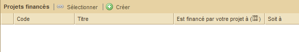
1. « Sources de financement »
Pour créer un lien entre un projet déjà existant ouvert et un projet de financement, il existe deux possibilités :
Pour sélectionner un projet existant, cliquez d’abord sur le bouton « Sélectionner ». Apparaît alors une boîte de dialogue :

Une fois complétées les informations requises, cliquez en bas sur Ok. S’affiche alors un message de confirmation.
2. « Projets financés »
Pour créer un lien entre un projet déjà existant ouvert et un projet financé, il existe deux possibilités :
Pour sélectionner un projet existant, cliquez d’abord sur le bouton « Sélectionner ». Apparaît alors une boîte de dialogue :

Une fois complétées les informations requises, cliquez en bas sur Ok. S’affiche alors le message de confirmation.
En fonction du modèle de projet, cette page peut renseigner les informations sur le projet qui sont indépendantes des phases.
Le sous-onglet « Cadre logique » permet de définir ou mettre à jour le
cadre logique d’un projet. Le cadre logique est un tableau dont les
lignes sont des objectifs spécifiques, des résultats attendus, des
activités ou des conditions préalables. Dans Sigmah, certains modèles de
projet permettent pour le cadre logique l’utilisation de groupes
d’éléments (groupes d’objectifs spécifiques, de résultats attendus,
d’activités ou de conditions préalables).
Plus précisément, le sous-onglet « Cadre logique » permet les actions suivantes sur un cadre logique :
N.B. : Bien penser à cliquer sur « Enregistrer » pour conserver les modifications faites sur le cadre logique !
Modification de l’objectif général
L’objectif général se trouve en haut du cadre logique. Pour le
modifier, il suffit de mettre le curseur dans le champ et de taper
l’intitulé d’objectif général désiré :

Modification du contenu d’une ligne
Chaque ligne du tableau contient 3 types d’information :
Pour modifier la Logique d’intervention ou les Risques et Hypothèses, il suffit de cliquer sur la case correspondante pour pouvoir modifier son contenu.
Ajout de lignes
Pour ajouter des lignes, cliquez à gauche de la ligne sur le lien « Ajouter »
situé juste en de-dessous du nom de la ligne. Dans le cas de la ligne «
Objectifs spécifiques », cela donne donc l’exemple suivant :

Si, dans votre modèle, des groupes sont utilisés pour les objectifs spécifiques, apparaît alors la boîte de dialogue suivante :

Une fois le groupe choisi dans la liste déroulante, cliquez sur OK. Apparaît alors votre nouvel objectif spécifique avec, par défaut, la lettre suivant celle de l’objectif précédent éventuellement suivie du nom donné à cet objectif :

N.B. : Les activités du cadre logique s’affichent automatiquement dans l’agenda.
Déplacement de lignes
A partir du moment où votre cadre logique possède plus d’un objectif
spécifique (ou résultat attendu, ou activité, ou condition préalable),
il est possible de réorganiser à votre souhait l’ordre de leurs lignes
via un clic droit sur celle qu’il vous intéresse de déplacer. Le
logiciel vous propose alors de la monter, descendre ou supprimer :

Copier-coller d’un cadre logique
Afin d’éviter de devoir réécrire totalement un nouveau cadre logique
semblable à un précédent, le logiciel Sigmah permet de copier
l’intégralité d’un cadre logique et de le copier dans un cadre logique
nouvellement créé.
Voir "Comment copier-coller un cadre logique ?".
Suppression de lignes
Pour supprimer une ligne cliquez sur l’intitulé générique (Groupe OS,
Groupe RA, Groupe A, Groupe CP, ou OS, RA, A, CP). Apparaît alors un
bouton « Supprimer » :

Ajout de groupes
Pour ajouter des groupes, cliquez à gauche de la ligne sur le lien «
Ajouter un groupe » (souligné) situé le plus bas sur la ligne. Exemple
pour le cas de groupes d’objectifs spécifiques :

Apparaît alors la boîte de dialogue suivante :

Après avoir saisi le nom que vous voulez donner à votre groupe, cliquer sur « OK ».
Votre groupe est créé et apparaît dans le cadre logique.

Renommage de groupes
Pour renommer un groupe, cliquez sur l’intitulé générique (Groupe O.S.,
Groupe R.A., Groupe A., Groupe C.P.). S’ouvre un menu contenant un
bouton « Renommer » :

En cliquant sur le bouton « Renommer », apparaît alors la boîte de dialogue suivante :

Tapez le nom de votre choix puis cliquer sur OK. Le nouveau nom du groupe apparaît alors dans votre cadre logique.
Suppression de groupes
Pour supprimer un groupe, cliquez sur l’intitulé générique (Groupe
O.S., Groupe R.A., Groupe A., Groupe C.P.). S’ouvre un menu contenant un
bouton « Supprimer » :

En cliquant sur le bouton « Supprimer », le groupe disparaît.
Le sous-onglet de Gestion des indicateurs permet de :
N.B. : Avant de quitter l’écran, n’oubliez pas de cliquer sur « Enregistrer ».
Définition d’indicateurs
Pour créer un indicateur, cliquez sur le bouton « Nouvel indicateur » (voir "Comment créer un indicateur ?" pour plus de détails sur la création d’indicateurs).
Pour modifier/supprimer la définition d’un indicateur, cliquez sur le lien portant le nom de l’indicateur.
Organisation d’indicateurs
Les indicateurs peuvent être organisés par groupes. Chaque groupe peut lui-même contenir des sous-groupes, etc.
Pour créer un groupe, cliquez sur le bouton « Nouveau groupe ».
Création et organisation de groupes d’indicateurs
Définition de sites de collecte d’indicateurs
La définition des sites de collecte d’indicateurs se fait dans l’onglet « Sites » situé à droite de l’écran.
Visualisation des sites de collecte d’indicateurs
Le sous-onglet de saisie des indicateurs permet 2 actions :
Manipulation du tableau
Pour manipuler les valeurs des indicateurs, 3 types de vues sont proposés dans cet écran :
Le choix d’avoir les indicateurs en colonnes et les sites en lignes, ou
vice-versa, peut être changé au moyen du bouton à flèches opposées qui
se trouve dans le coin en haut à gauche du tableau ( ).
).
Pour changer de vue, 3 possibilités sont offertes :
 )
: adossés à chaque en-tête du tableau (Site, Indicateur ou Mois), ils
permettent de changer de vue en prenant comme référence le site,
indicateur ou mois désiré. Exemple : en cliquant sur bouton loupe à côté
d’un en-tête d’indicateur « Nb de kits NFI distribués », la vue du
tableau est changée pour montrer une vue par indicateur pour
l’indicateur « Nb de kits NFI distribués ».
)
: adossés à chaque en-tête du tableau (Site, Indicateur ou Mois), ils
permettent de changer de vue en prenant comme référence le site,
indicateur ou mois désiré. Exemple : en cliquant sur bouton loupe à côté
d’un en-tête d’indicateur « Nb de kits NFI distribués », la vue du
tableau est changée pour montrer une vue par indicateur pour
l’indicateur « Nb de kits NFI distribués ». ) et « vue suivante » (
) et « vue suivante » ( ) : ils permettent de naviguer dans l’historique des vues qu’on a choisies.
) : ils permettent de naviguer dans l’historique des vues qu’on a choisies.
La vue par défaut : c’est la vue qui est chargée quand on ouvre le sous-onglet « Saisie indicateurs ».
La case à cocher « Vue par défaut » permet de savoir si la vue en cours
est la vue par défaut, et éventuellement de changer celle-ci :
Saisie de valeur d’indicateur
Pour saisir une valeur d’indicateur :
Consultation ou modification de la définition d’indicateurs
Pour consulter ou modifier la définition d’un indicateur, cliquez sur le bouton crayon ( ) se trouvant à côté du nom d’un indicateur dans le tableau. Cela ouvrira la fiche de l’indicateur concerné (voir "Définition d’indicateurs" pour plus de détails).
) se trouvant à côté du nom d’un indicateur dans le tableau. Cela ouvrira la fiche de l’indicateur concerné (voir "Définition d’indicateurs" pour plus de détails).
La page Agenda est divisée en deux parties :
1. A gauche, l’agenda à proprement parler qu’il est possible de masquer pour agrandir la taille du calendrier (voir « Chevrons encadrés » pour plus de détails). Il est également possible de sélectionner les rubriques que l’on souhaite afficher ou masquer en cochant ou décochant les intitulés de la liste de l’agenda.

2. A droite, le calendrier qui peut être présenté de 3 façons différentes : aujourd’hui, semaine et mois. Par défaut, le calendrier s’affiche sous le format du mois en cours. La date de chaque jour est écrite en gris foncé. Chaque ligne est précédée d’un numéro en orange qui correspond au numéro de la semaine par rapport à l’année en cours. Les onglets « Précédent » et « Suivant » permettent d’accéder soit à la semaine soit au mois qui précède ou qui est à venir. Il est également possible d’ajouter un événement en cliquant sur le dernier onglet du calendrier intitulé « Ajouter un événement ».

Apparaît alors la boîte de dialogue suivante :

Renseignez les champs indiqués puis cliquez sur OK. L’événement apparaît alors dans le tableau « Agenda ».
Apparaissent ici les activités indiquées dans le cadre logique.
Le sous-onglet « Rapports & Documents » permet de réaliser deux actions :
N.B. : Rapports et documents figurent dans le même tableau mais se distinguent par des icônes différenciées :
 rapports
rapports documents
documentsCréer un rapport
Pour créer un rapport, cliquez sur le bouton « Nouveau rapport » dans la partie gauche de votre écran :

Apparaît alors une liste des types de rapport disponibles pour ce projet, organisés par phase :

Sélectionnez la phase de votre choix en cliquant sur son intitulé.
Apparaît alors une boîte de dialogue. Renseignez le champ du titre puis
cliquez sur Ok pour valider.

Apparaissent alors :

Ouvrir un rapport existant
Pour afficher dans la partie droite de la page le détail du rapport qui vous intéresse, cliquez sur son titre dans la partie gauche :

Le tableau de droite affiche alors le contenu du rapport sélectionné, reprenant son titre en intitulé de partie haute :

Afficher en mode plan ou mode complet
Par défaut, le rapport s’ouvre en mode complet, c’est-à-dire dans un format présentant de façon dépliée l’ensemble des questions (champs du modèle) et des réponses. Il est alors possible de jouer sur la taille des parties et sous-parties du rapport en cliquant sur les boutons - pour réduire une réponse (ou + pour la déplier à nouveau).

Il est également possible de visualiser le rapport en mode plan qui affiche automatiquement le rapport dans sa forme la plus condensée, c’est-à-dire avec l’ensemble des réponses cachées, laissant seulement apparaître les titres de partie et les questions.

Exporter un rapport
Pour exporter un rapport, sélectionnez le rapport de votre choix dans le tableau de gauche « Rapports & Documents » puis cliquez sur le bouton « Export Word » situé sous le titre du tableau de droite qui porte dès lors le nom du rapport sélectionné :

Apparaît alors la boîte de dialogue d’enregistrement de fichier de votre ordinateur :

Une fois le dossier de votre choix sélectionné, cliquez sur Enregistrer. Une fois le téléchargement terminé, le fichier est alors disponible sous forme .rtf.
Ajouter un fichier
Pour joindre un document cliquez sur le bouton « Ajouter un fichier ».

Un menu se déroule alors avec tous les types de document qu’on peut
attacher à ce projet, regroupés par écran (phase ou sous-onglet «
Détails ») :

Sélectionnez le type de document votre choix en cliquant sur son intitulé. Apparaît alors une boîte de dialogue.

Cliquez sur le bouton « Ajouter un fichier » en bas à gauche. Apparaît
alors la boîte de dialogue de sélection de fichier de votre ordinateur :

Sélectionnez le fichier de votre choix puis cliquez sur le bouton « Ouvrir ».
Apparaît alors une boîte de dialogue vous proposant d’ajouter un point en attente pour ce document :

Cliquez sur « Oui » pour confirmer ou « Non » pour annuler.
Si vous cliquez sur « Oui, apparaît alors une nouvelle boîte de dialogue relative à la création du point en attente.
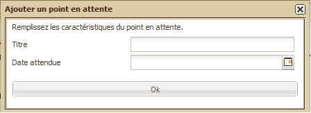
Au final, votre document attaché apparaît donc dans le tableau « Rapports & Documents » avec les informations suivantes :

Ouvrir un document
Pour ouvrir un document, il suffit de cliquer sur son titre.
Cette partie du manuel a pour objectif de rassembler l’information sur toutes les questions usuelles que l’on se pose à l’utilisation de Sigmah.
Le logiciel Sigmah permet de créer un nouveau projet de deux manières différentes. Votre choix de l’une ou l’autre dépendra de surtout des liens du nouveau projet avec d’autres, mais aussi de méthodes de travail personnelles.
La première manière de créer un projet est située dans le Tableau de bord. Pour cela, cliquez en bas à gauche de la page dans le bloc « Menu » :

S’ouvre alors une boîte de dialogue :

Une fois les champs de texte et listes déroulantes renseignés, cliquez sur Créer. Apparaîtra alors un message de confirmation en bas à droite de votre écran.
La possibilité de créer un nouveau projet dans une page Projet se
trouve dans le bloc « Projets liés » situé en bas de l’écran. Ce bloc
est divisé en deux colonnes « Sources de financement » et « Projets
financés ».
Dans les deux cas, il vous faudra cliquer sur le bouton « Créer » situé à droite du nom de la colonne :
Cas n°1 :

Ou cas n°2 :

S’ouvre alors une boîte de dialogue :
Cas n°1 :

Cas n°2 :

Une fois les champs de texte et listes déroulantes renseignés, cliquez
sur Créer. Apparaîtra alors un message de confirmation en bas à droite
de votre écran.
Pour compléter chaque phase, il est nécessaire de procéder à :
Pour plus de détails sur le changement de phase, voir "Le tableau des phases".
N. B. : Le comportement décrit ici est le comportement final attendu du système d’amendement de projet. Ce comportement n’est pas encore développé à l’heure de l’écriture de ce manuel, mais il le sera très prochainement. La description du nouveau comportement à développer est faite dans l’issue 0000167: Revise Amendments system behavior. Le comportement du logiciel à l’heure de l’écriture de ce manuel n’est pas très différent du comportement final décrit ci-dessous.
Faire un amendement permet de créer une nouvelle version de projet. Dans Sigmah, ce processus se conduit en plusieurs actions pour chaque version :
Les versions peuvent être verrouillées / déverrouillées. L’intérêt de
ces verrous est de permettre de s’assurer que tout le monde s’entend sur
l’état final d’une version avant de proposer la version en validation.
Quand une version a fini d’être modifiée et peut être proposée en
validation, il suffit de cliquer sur le lien « Verrouiller version »
pour la verrouiller :

Le bloc de gestion des amendements prend alors cette apparence :

Pour déverrouiller une version verrouillée, il suffit alors de cliquer sur le lien « Déverrouiller version », pour remettre la version dans son état initial.
Une fois verrouillée, une version peut être validée ou rejetée. Attention : une fois validée ou rejetée, on ne peut plus modifier une version !
Pour valider une version, il suffit de cliquer sur le lien « Valider version ». Le bloc de gestion des amendements prend alors cette apparence :

Pour rejeter une version verrouillée, il faut cliquer sur le lien «
Rejeter version ». Le bloc de gestion des amendements prend alors
l’apparence suivante :
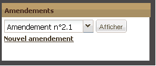
Afin d’éviter de devoir réécrire totalement un nouveau cadre logique
semblable à un précédent, le logiciel Sigmah permet de copier
l’intégralité d’un cadre logique et de le copier dans un cadre logique
nouvellement créé.
Pour cela, accédez à la page Cadre logique du projet que vous souhaitez
copier puis de cliquer à droite de la deuxième ligne du bloc Cadre
logique sur le bouton « Copier » :

Apparaît alors une boîte de dialogue en bas à droite de l’écran qui vous confirme la bonne prise en compte des éléments du cadre logique.
Accédez ensuite à la page Cadre logique du projet que vous souhaitez compléter sur la base du précédent en cliquant sur le bouton « Coller » :

Apparaît alors une boîte de dialogue qui vous demande de confirmer l’insertion des informations du cadre logique copié :

Si vous cliquez sur Oui, apparaît alors en bas à droite de votre écran un message de confirmation.
Voir "Rapports & documents" pour plus de détails sur ce processus.
Voir "Rapports & documents" pour plus de détails sur ce processus.
Les indicateurs se créent depuis le sous-onglet « Gestion des indicateurs » d’un projet en cliquant sur le bouton « Nouvel indicateur ».
S’ouvre alors la pop-up de création d’indicateur (par défaut de type qualitatif) :

Quelque soit le type de l’indicateur (quantitatif ou qualitatif), les champs à remplir pour créer un indicateur ont les rôles suivants :
Si l’indicateur est de type « Quantitatif », les champs suivants sont aussi proposés :
Si l’indicateur est de type « Qualitatif », les champs suivants sont aussi proposés :
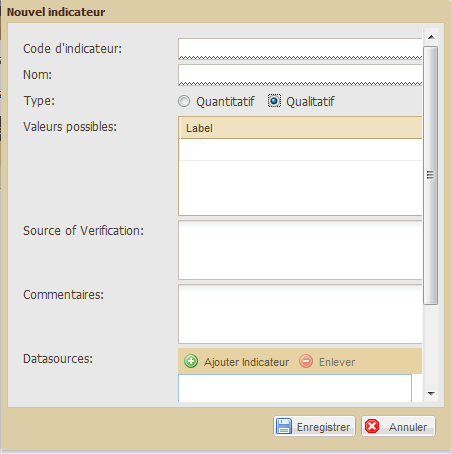
En fonction de la gravité du problème rencontré, voici trois types de solutions proposés :
1. Tout d’abord, si une information que vous venez de renseigner et d’enregistrer n’apparaît pas, vérifiez que vous avez bien actualisé votre navigateur (raccourci clavier : F5).
2. Si le problème persiste, vous pouvez nous en faire part aux développeurs de Sigmah en cliquant sur le lien « Signaler un dysfonctionnement » disponible en haut à droite de toutes les pages ouvertes au sein du logiciel.

3. Enfin, vous pouvez consulter des forums « Technical support » et « Feedbacks & suggestions » sur www.sigmah.org
La zone d’administration est un espace réservé aux utilisateurs ayant le droit de paramétrer le logiciel qui est accessible par un simple clic sur le bouton « Administration » situé en bas à gauche du Tableau de bord dans le composant Menu.
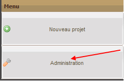
La zone d’administration permet de créer et modifier :
Pour en savoir plus sur le concept de modèles, voir la rubrique "Le « Modèle »".
Utilisateur
L’utilisateur est une personne physique autorisée à utiliser le
logiciel Sigmah dans le cadre d’un usage institutionnel. Cela signifie
que l’équipe projet à laquelle elle appartient (ou le référent Sigmah
suivant le type d’organisation de l’institution) lui a octroyé des
droits à cet effet, droits définis dans le cadre du paramétrage auquel
l’utilisateur en question n’a pas nécessairement accès pour modification
(voir Profils ci-dessous).
Dans le tableau Utilisateurs du sous-onglet Utilisateurs de l’écran
d’Administration, un utilisateur est défini par 9 informations :
1. Nom
2. Prénom
3. Statut : un compte utilisateur peut être :
4. E-mail
5. Langue d’invitation : anglais ou français
6. Zone de rattachement : zone d’intervention dont dépend l’utilisateur
7. Clé secrète
8. Dernier changement de mot de passe
9. Profils : voir ci-dessous
Profil
Le profil est l’ensemble des droits associés à un utilisateur en
fonction des types d’autorisations qu’il possède et des groupes de
confidentialités (voir ci-dessous) auxquels il appartient.
Ces types d’autorisations (appelées « Permissions globales » dans le
logiciel) sont au nombre de 9 dans le tableau Profils du sous-onglet
Utilisateurs de l’écran d’Administration :
Groupe de confidentialité
Un groupe de confidentialité est un ensemble de champs qui partagent la
même confidentialité. Un groupe « Sécurité » pourrait rassembler tous
les champs traitant d’information sécuritaire par exemple, ou un groupe «
RH » pourrait contenir toutes les informations d’évaluation et suivi
des ressources humaines, etc.
Quand un champ est associé à un groupe de confidentialité, il devient par défaut invisible pour tous les utilisateurs.
Mais ces groupes de confidentialité peuvent ensuite être associés à des
utilisateurs via le lien défini entre ces groupes et des profils, pour
permettre de donner accès aux champs dépendant de groups de
confidentialité. Le lien entre un profil et un groupe de confidentialité
est caractérisé par un niveau de droit :
Si jamais un utilisateur a plusieurs profils, seuls seront conservés pour lui les droits les plus forts sur chaque groupe de confidentialité.
Tout champ de modèle de projet est composé de 10 caractéristiques dont les définitions sont les suivantes :

Dans le cadre des modèles de projet et de zone d’intervention, un type est le format sous lequel devra être renseignée l’information liée au champ en cours de création (voir "Comment éditer un modèle de projet qui vient d’être créé?" pour plus de détails). Ce format est à choisir parmi une liste déroulante qui s’affiche si l’on clique sur la flèche encadrée située à droite de la ligne :

Ces différents types de champ proposés se définissent de la façon suivante :
Par ailleurs, certains types impliquent des informations supplémentaires à renseigner dans la même boîte de dialogue.
Informations supplémentaires pour les champs « Liste de fichiers »
« Limite supérieure » correspond au nombre maximum de fichiers autorisés dans la liste.

Informations supplémentaires pour les champs « Liste de choix »
Trois informations supplémentaires sont demandées pour les champs « Liste de choix » :

Pour créer un choix personnalisé, inscrivez son nom dans le champ texte puis cliquez sur ajouter :

Le nouveau choix personnalisé apparaîtra alors sous le champ de texte.
Pour supprimer un choix, cliquer sur la croix à sa gauche.
Informations supplémentaires pour les champs « Rapport » et « Liste de rapports »
Pour un champ « Rapport » ou « Listes de rapport », la seule information supplémentaire est :
Pour plus de détails, voir "Le « Rapport »" et "Gestion des modèles de rapport".


Informations supplémentaires pour les champs « Champ texte »

La page Gestion des utilisateurs est composée de 3 blocs :
Pour en savoir plus sur ces trois notions, voir "« Utilisateur », « Profil» et « Groupe de confidentialité »".
Le bloc « Utilisateurs » permet de réaliser 4 actions :
Le bloc « Profils » permet de réaliser 2 actions :
Le bloc « Gestion des groupes de confidentialité » permet de réaliser 2 actions :
N.B. : Le contenu de chacun des blocs Utilisateurs et Profils peut
être rafraîchi au fil des modifications apportées par un simple clic sur
le bouton Actualiser situé à droite de la barre d’outils.
Le bloc Utilisateurs permet d’ajouter des utilisateurs (un à la fois). Pour cela, cliquez sur le bouton « Ajouter Utilisateur » situé sous le titre du bloc.

S’ouvre alors une boîte de dialogue intitulée « Nouvel utilisateur » :

Renseignez alors les champs indiqués :
Le bloc Utilisateurs permet de désactiver (et/ou réactiver) un compte d’utilisateur (un à la fois). Pour cela, cliquez sur le bouton « Désactiver/Réactiver » situé sous le titre du bloc à droite du bouton « Ajouter Utilisateur » :

Si le tableau compte plusieurs utilisateurs, sélectionnez avec un simple clic la ligne de l’utilisateur que vous souhaitez modifier puis cliquez sur « Désactiver/Réactiver »
Si le statut du tableau des utilisateurs indiquait « Actif », il affiche désormais « Bloqué » :

Pour réactiver le compte de l’utilisateur souhaité, cliquez à nouveau sur « Désactiver/Réactiver ».
Le bloc Utilisateurs permet de rechercher un utilisateur à partir de son nom. Pour cela, renseignez le champ de texte situé à droite de l’intitulé « Recherche utilisateur » :

Le bloc Utilisateurs permet de modifier un compte d’utilisateur. Pour cela, cliquez dans la dernière colonne à droite de la ligne qui vous intéresse sur le bouton « Modifier » :

Apparaît alors une boîte de dialogue présentant les différentes informations associées à cet utilisateur :

Procédez aux modifications souhaitées puis cliquez sur enregistrer. Apparaît alors en bas à droite de l’écran un message de confirmation.
Le bloc Profil permet de créer un nouveau profil d’utilisateur. Pour cela, cliquez sur le bouton « Ajouter profil » situé sous l’intitulé du bloc :

Apparaît alors une boîte de dialogue permettant de nommer le nouveau profil, de sélectionner ses types d’autorisation et de sélectionner ses groupes de confidentialité :

Cliquez sur Enregistrer en bas à gauche pour sauvegarder les informations renseignées. Apparaît alors en bas à droite de l’écran un message de confirmation.
Pour modifier un profil d’utilisateur, cliquez sur le bouton « Modifier » situé dans la dernière colonne à droite de la ligne qui vous intéresse :

Apparaît alors une boîte de dialogue permettant de modifier les informations du profil sélectionné :

Une fois les modifications enregistrées apparaît en bas à droite de l’écran un message de confirmation.
Pour créer un groupe de confidentialité, cliquez sur le bouton « Ajouter » situé sous l’intitulé du bloc :

Apparaît alors une boîte de dialogue avec des champs à renseigner :

Une fois les champs renseignés, cliquez sur le bouton « Enregistrer » situé en bas à gauche. Apparaît alors un message de confirmation en bas à droite de votre écran.
Pour modifier un groupe de confidentialité, cliquez sur le bouton « Modifier » situé dans la dernière colonne à droite de la ligne qui vous intéresse.

Apparaît alors une boîte de dialogue avec des champs à renseigner :

Une fois les champs modifiés, cliquez sur le bouton « Enregistrer »
situé en bas à gauche. Apparaît alors un message de confirmation en bas à
droite de votre écran.
Une nouvelle boîte de dialogue apparaît afin d’actualiser la colonne
Groupes de confidentialité du Bloc Profils où les éléments précédemment
modifiés sont également associés :

Cliquez sur « oui ».
Composée d’un seul bloc, la page « Gestion des zones d’intervention » permet de créer des zones d’intervention - sur la base des modèles de zones d’intervention – ainsi que de modifier ou supprimer celles déjà créées. (Pour plus de détails sur les modèles de zones d’intervention, voir « Gestion des modèles de zones d’intervention ».

Le tableau des zones d’intervention est composé de 5 boutons situés sous son titre:
N. B. : Pour plus d’informations sur les boutons « Déplier tout » et Replier tout », voir la rubrique « Déplier/replier toutes les zones d’intervention » dans « Tableau des zones d’intervention » (Pour une meilleure navigation à l’intérieur des dossiers, voir dans cette même page la rubrique : « Ouvrir/fermer un dossier contenant des sous-dossiers ».)
Il est également composé de 4 colonnes :
Créer une zone d’intervention
Pour ajouter une zone d’intervention, sélectionnez la ligne
correspondant à la zone dans laquelle vous souhaitez créer la nouvelle
zone puis cliquez sur le bouton « Ajouter » :

Apparaît alors une boîte de dialogue :

Renseignez les champs demandés puis cliquez sur le bouton « Créer ».
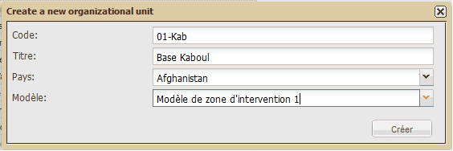
La nouvelle zone est créée et apparaît dans le tableau automatiquement mis à jour.

Déplacer une zone d’intervention
Pour déplacer une zone d’intervention, sélectionnez la ligne
correspondant à la zone que vous souhaitez déplacer puis cliquez sur le
bouton « Déplacer ».

Apparaît alors une boîte de dialogue :

Sélectionnez dans la liste déroulante le nouvel emplacement souhaité
pour la zone d’intervention puis cliquez sur le bouton « Déplacer ».

La nouvelle zone est créée et apparaît dans le tableau automatiquement mis à jour.
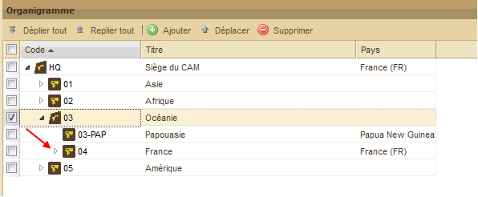
Supprimer une zone d’intervention
Pour supprimer une zone d’intervention, sélectionnez la ligne
correspondant à la zone que vous souhaitez supprimer puis cliquez sur le
bouton « Supprimer ».
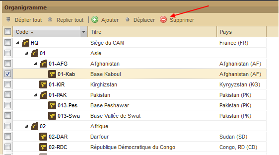
Apparaît alors une boîte de dialogue :

Pour confirmer la suppression cliquez sur Oui, pour l’annuler cliquez sur Non. Si vous avez confirmé la suppression, le tableau est alors automatiquement mis à jour.
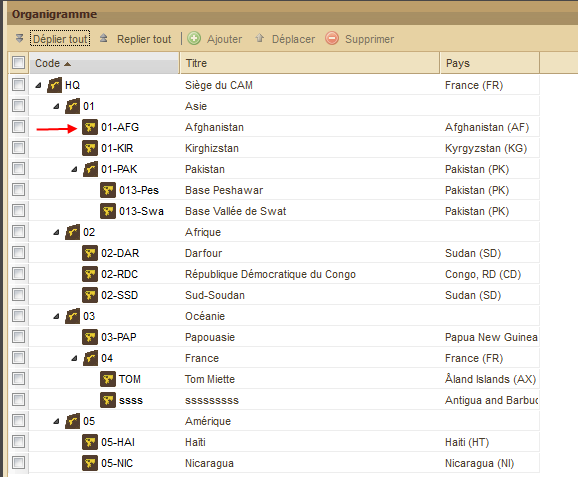
Composée d’un seul bloc, la page Gestion des modèles permet de créer et modifier des modèles de projet.
Pour plus de détails sur le concept de modèle, voir « Le "Modèle" »
Pour plus de détails sur le concept de projet, voir « Le "Projet" »
Pour créer un modèle de projet, cliquez sur le bouton « Ajouter » situé sous l’onglet Administration :

Apparaît alors une boîte de dialogue :

Nommez le modèle de projet puis sélectionnez un type de modèle de projet parmi les trois proposés (Projet propre, projet de financement, projet partenaire local) en cliquant sur le bouton situé entre les icones de modèle et leur intitulé. Cliquez sur « Enregistrer ». Apparaît alors un message de confirmation.
Votre modèle de projet s’ajoute alors en bas de la liste des modèles déjà existants.
Une fois votre modèle de projet créé, il faut l’éditer, c’est-à-dire le doter de caractéristiques spécifiques. Pour cela, cliquez sur le nom souligné du modèle de projet qui vous intéresse. S’il vient d’être créé, il apparaît par défaut en Etat « Brouillon » (par opposition à « Utilisé ») dans la liste des modèles existants.
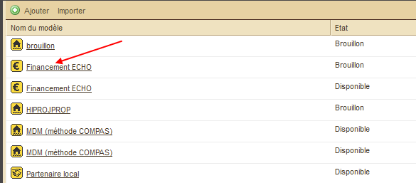
La page d’administration change alors d’écran sans ouvrir un nouvel onglet :

Cette page d’édition est composée de deux parties :
Cette partie permet de modifier 3 informations sur le modèle :
Après avoir modifié l’une de ces informations, il est nécessaire de cliquer sur le bouton « Enregistrer » pour conserver les modifications.
Cette partie est composée des 3 onglets suivants :
L’onglet « Champs » est composé d’une barre d’outils et d’un tableau :
Les champs par défaut
Juste après la création d’un nouveau modèle de projet, ce tableau est
déjà rempli avec les 9 champs par défaut suivants (qui font autant de
lignes) :
Parmi les 10 caractéristiques (colonnes) dans le tableau d’édition, la
deuxième (« Type ») est déjà renseignée avec l’information « Elément par
défaut ». Ce paramétrage, qui ne peut en aucun cas être modifié,
signifie que ce champ sera présent avec l’intitulé qui lui correspond
(Code, Titre, Pays, etc.) dans tous les projets créés quelque soit leur
modèle et quelque soit le type de projet (propre, de financement,
partenaire local).
Il en va différemment des 3 dernières colonnes (Conteneur, Id Groupe,
Groupe) qui, si elles possèdent déjà certaines informations par défaut,
peuvent être modifiées par la suite.
Comment éditer les champs par défaut d’un modèle de projet ?
Pour paramétrer chaque champ proposé par défaut, cliquez sur son
nom. S’ouvre alors une boîte de dialogue spécifique pour chaque champ.
Exemple pour le champ Code :

Pour chaque boîte de dialogue, une fois les informations renseignées, cliquez sur le bouton « Enregistrer » situé en bas au centre. Apparaît alors un message de confirmation.
Un autre type d’information est directement accessible depuis le tableau d’édition. Il s’agit de « Groupe » situé dans la dernière colonne. En cliquant sur son nom, apparaît alors une boîte de dialogue :

Renseignez les champs demandés (Nom, Conteneur, Position verticale, Position horizontale) puis enregistrez. Apparaît alors un message de confirmation.
Comment éditer un champ au sein d’un modèle de projet ?
Les caractéristiques présentées ci-dessous correspondent à chacune des colonnes du tableau d’édition. (Voir « Comment éditer un modèle de projet qui vient d’être créé ? » pour plus de détails sur le tableau d’édition)
Si vous créez un nouveau champ en cliquant sur le bouton « Ajouter », vous verrez apparaître la boîte de dialogue suivante :

Renseignez les champs suivants :

Pour plus de détails, voir « Définitions des types associés à un champ de modèle de projet ».


1 3 5
2 4 6


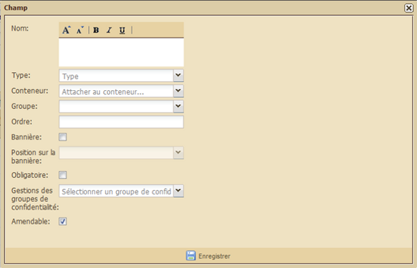
N.B. : Enregistrement des informations renseignées
Au terme du remplissage de vos informations, n’oubliez pas de cliquez
sur Enregistrer. Un message de confirmation apparaîtra alors.
Par ailleurs, si vous n’avez pas renseigné tous les champs du formulaire, un message d’erreur vous en avertira :

Pour plus de détails sur les 10 caractéristiques d’un champ, voir « Les champs d’un modèle de projet » et « Définitions des types associés à un champ de modèle de projet ».
Comment créer un groupe de champs au sein d’un modèle de projet ?
Cliquez sur le bouton « Ajouter un groupe » situé sous l’onglet « Champs » à droite du bouton « Ajouter ». S’ouvre alors une boîte de dialogue :

Renseignez les champs suivants :
Apparaît alors un message de confirmation.
L’onglet « Phases » propose par défaut :

Comment modifier une phase au sein d’un modèle de projet ?
Chaque ligne existante possède au sein de sa cinquième colonne (sans
nom) un bouton « Modifier » sur lequel il est possible de cliquer pour
mettre à jour la phase correspondante. Apparaît alors la boîte de
dialogue suivante :

Renseignez les champs suivants :

Comment créer une nouvelle phase au sein d’un modèle de projet ?
Cliquez sur le bouton « Ajouter » situé sous l’onglet Phases. Apparaît alors la boîte de dialogue suivante :

Voir « Comment modifier une phase au sein d'un modèle de projet ? » pour plus de détails sur les champs à renseigner.
L’onglet « Cadre logique » propose :
Chacune de ces 4 rubriques est elle-même composée de plusieurs champs.
Pour accéder aux 3 dernières rubriques, il est nécessaire d’utiliser l’ascenseur prévu à cet effet sur la droite du menu :

N. B. : Chacune des informations à renseigner dans cette page sera visible par l’utilisateur final dans le sous-onglet Cadre logique d’un projet quelque soit son modèle et son type.
Comment éditer le modèle de cadre logique d’un modèle de projet ?
Il vous est tout d’abord possible de modifier le nom du cadre logique proposé par défaut « Default log frame ». Pour cela, effacez-le en écrivant le nom de votre choix à la place. Apparaît alors un message de confirmation.
De même, pour la suite, des propositions vous sont toujours spécifiées par défaut pour chacun des champs des 4 rubriques sur la base du standard le plus commun du cadre logique (à savoir un tableau composé de 4 colonnes - non modifiables ici - et d’un nombre maximum de lignes et de groupes – ici, limité à 3 par défaut pour chaque rubrique, sauf exception précisée ci-dessous).
Voici la liste des éléments modifiables par rubrique :
1. Objectifs spécifiques (OS) :
2. Activités (A) :
3. Résultats Attendus (RA) :
4. Pré-requis (P) :
Composée d’un seul bloc, la page Gestion des modèles de zones
d’intervention permet de créer et modifier des modèles de zones
d’intervention.
Pour plus de détails sur le concept de modèle, voir « "Modèle" ».
Pour plus de détails sur le concept de zone d’intervention, voir « La "Zone d’intervention" ».
Pour créer un modèle de zone d’intervention, cliquez sur le bouton « Ajouter » situé sous l’onglet Administration :

Apparaît alors une boîte de dialogue :

Renseignez les champs suivants :
Cliquez enfin sur le bouton « Enregistrer » situé en bas à gauche. Apparaît alors un message de confirmation.
La page Gestion des modèles de rapports est composée d’un bloc divisé
en deux parties. La partie gauche présente la liste des modèles de
rapports classée par nom, celle de droite le détail du plan du rapport
sélectionné dans la partie gauche (par un simple clic sur la ligne du
modèle de rapport qui vous intéresse).

Pour plus de détails sur le concept de modèle, voir « Le "Modèle" »
Pour plus de détails sur le concept de rapport, voir « Le "Rapport" »
Pour créer une modèle de rapport, inscrivez son nom dans la cellule vide située au-dessus de la colonne « Nom du modèle de rapport » puis cliquez sur le bouton « Ajouter ». Apparaît alors un message de confirmation. Le nouveau modèle s’affiche automatiquement dans la liste.

Pour créer une nouvelle section de rapport, cliquez sur le bouton « Ajouter » situé en haut de la partie droite du bloc :

Apparaît alors une ligne supplémentaire dans la colonne de gauche
intitulée « Nom de la section » : « Cliquez sur le champ pour l’éditer
».
Cliquez sur ce champ pour pouvoir le renommer :

Cliquez à présent sur le chiffre 0 situé dans la colonne précédente «
Ordre » pour choisir la place de cette nouvelle section par rapport aux
autres. Inscrivez le nombre de votre choix puis tapez Entrée sur votre
clavier. Votre choix est enregistré.

Cliquez à présent sur le chiffre 0 situé dans la colonne « Nombre de
zones de texte » pour choisir le nombre de paragraphes associés à cette
nouvelle section par rapport aux autres. Inscrivez le nombre de votre
choix puis tapez Entrée sur votre clavier. Votre choix est enregistré.

Pour associer une section parente à cette nouvelle section, cliquez sur
la même ligne dans la colonne intitulée « Id section parente ».
Apparaît alors une cellule avec liste déroulante.

Cliquez sur la flèche tournée vers le bas pour faire apparaître les choix de la liste :

Sélectionnez la section qui convient puis tapez Entrée sur votre clavier. Votre choix est enregistré.

La page « Gestion des catégories » est composée d’un tableau en deux colonnes :
Elle permet 5 actions :
Pour plus d’informations sur les catégories et leurs étiquettes, voir « Une "Catégorie" ».
Création de catégorie
Pour créer une nouvelle catégorie :

Apparaît alors un message de confirmation. La nouvelle catégorie est
ajoutée de façon automatique à la liste de celles déjà existantes.
Suppression de catégorie
Pour supprimer une catégorie :

Apparaît alors un message de confirmation. La liste des catégories est automatiquement mise à jour.
Importer une catégorie
Pour importer une catégorie, cliquez sur le bouton « Importer » :

Apparaît alors une boîte de dialogue :
Créer des étiquettes de catégorie
Pour créer des labels au sein d’une nouvelle catégorie :

Apparaît alors un message de confirmation. La liste des étiquettes est automatiquement mise à jour.
Suppression d’étiquettes de catégorie
Pour supprimer des labels au sein d’une catégorie :

Apparaît alors un message de confirmation. La liste des étiquettes est automatiquement mise à jour.